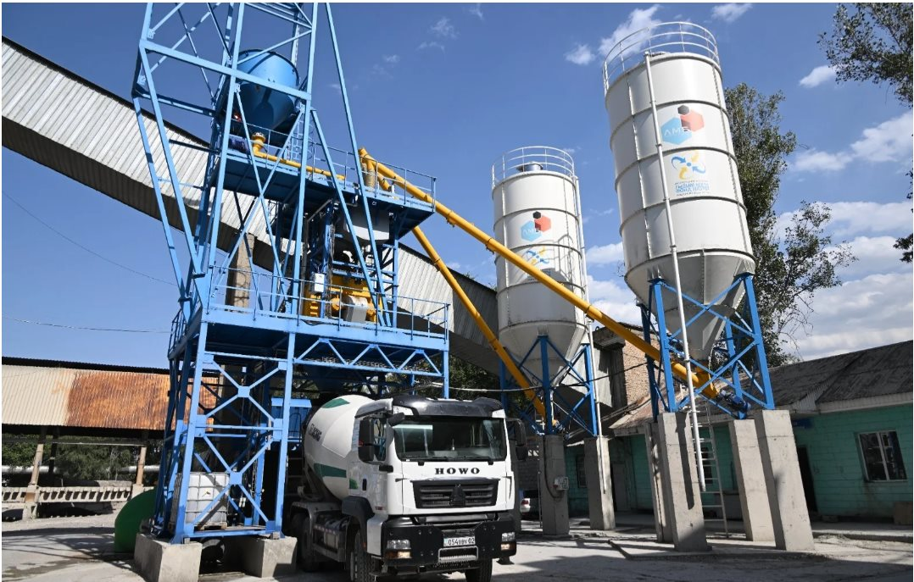
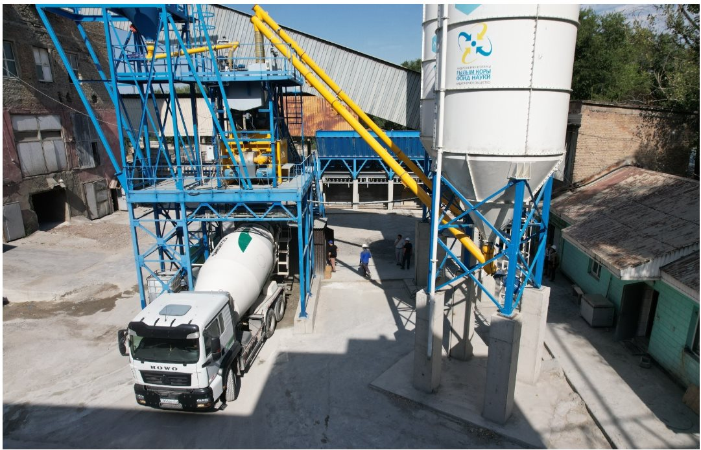
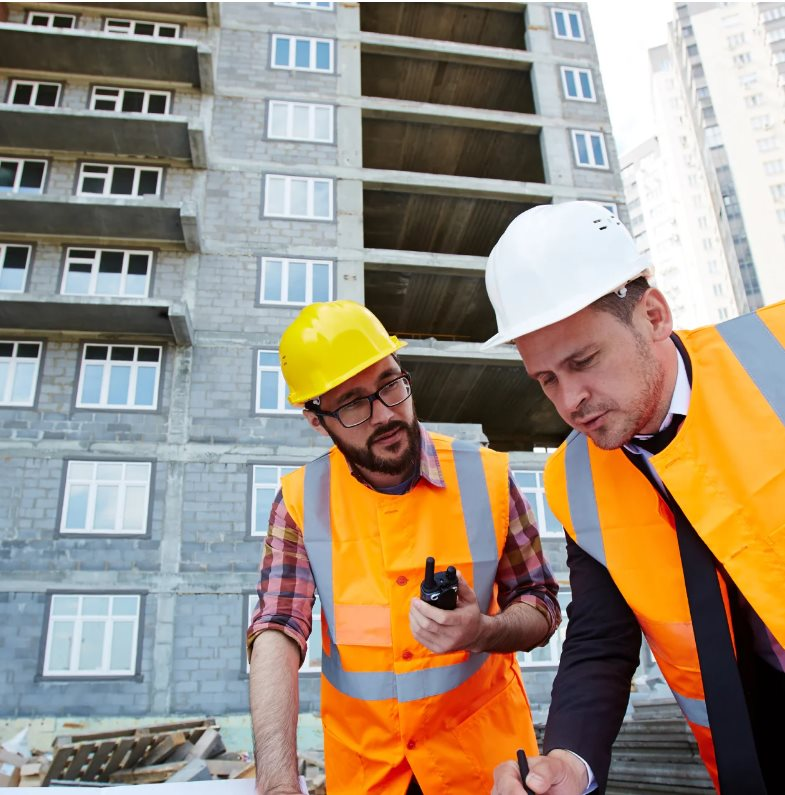
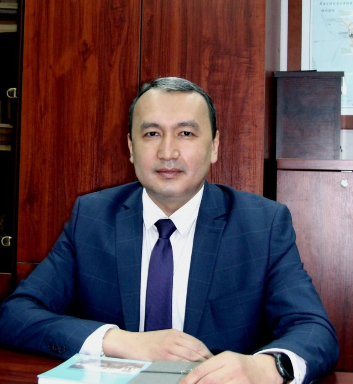
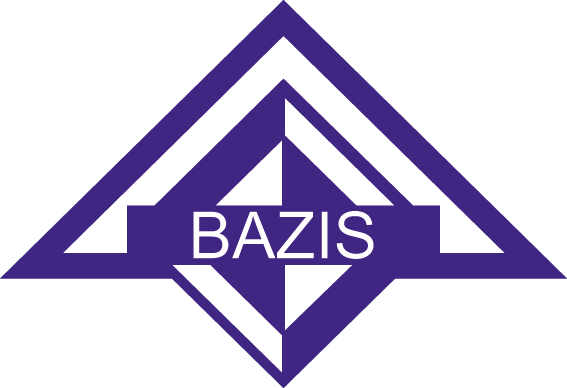
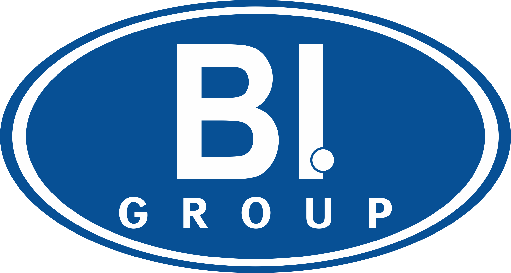
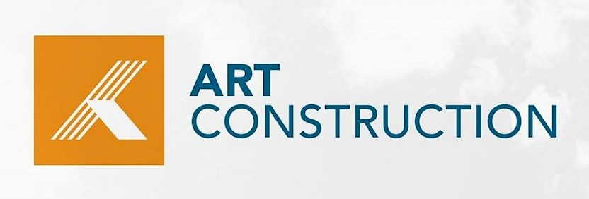
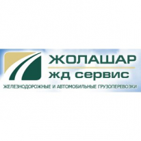
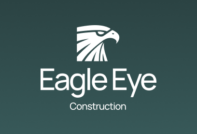

Товарный бетон от М100 до М500. Литой модифицированный бетон не имеет аналогов в Казахстане. Проверка качества своей лабораторией. Завод находится в черте г. Алматы.



ЛМБ 2022 — высокотехнологичная компания, которая была создана 30 ноября 2022 г. Наша компания ориентирована на производство продукции с высокой добавленной стоимостью, которая отличается своей уникальностью и инновационностью. Качество продукции, быстрая доставка по г. Алматы.

Вся продукция сертифицирована и соответствует ГОСТу. Цены указаны за 1 куб.м.
Закажите бетон прямо сейчас: +7 778 124 02 98
Литой модифицированный бетон не имеет аналогов на территории Республики Казахстан, при этом обладает искомыми и необходимыми в современном строительстве свойствами и физико-техническими характеристиками. Необходимо отметить, что ЛМБ производится уже по Еврокодам EN 206-2017, уже принятым и действующим в Казахстане.
Сравнение ЛМБ со стандартным бетоном М350
| ЛМБ | Стандартный бетон М350 | |
|---|---|---|
| Минимальная прочность при сжатии в возрасте 28 суток | 32 МПа | 32 МПа |
| Достижимая прочность при сжатии в возрасте 28 суток | 54 МПа | 40 МПа |
| Прочность в возрасте 2 суток = (от 50% от марочной прочности) | от 16,00 МПа | 9,6 МПа |
| Прочность в возрасте 7 суток = (110% от марочной прочности) | от 35,2 МПа | 22,4 МПа |
| Удобоукладываемость — расплыв конуса | от 660 до 700 мм | 220–250 ммнедостаточно для применения безвибрационных технологий строительных работ |
| Время истечения из V-образной воронки | 9–12 секунд | Товарный бетон не имеет таких показателей как время истечения и проходимость через препятствия в конструкции. |
| L-box | ≥0,9 | Товарный бетон не имеет таких показателей как время истечения и проходимость через препятствия в конструкции. |





Мы свяжемся с вами в течение дня и проконсультируем.
Наш бетон изготовлен по уникальной запатентованной технологии и позволяет экономить прежде всего на отсутствии необходимости его виброукладки. Трудозатраты уменьшаются в 3 раза. Имеет высокую прочность и более низкий вес. Применяется для изготовления уникальных бетонных конструкций.
Завод находится в черте г. Алматы по адресу: Казахстан, г. Алматы, ул. Бокейханова, 11 (Жетысуйский район). Благодаря удобной локации завода доставка возможна в любую точку города.
Да, условия при больших объемах обсуждаются индивидуально. Свяжитесь с нами по телефону +7 778 124 02 98 — менеджер рассчитает стоимость и подберет лучшие условия. Марки, не указанные в прайс-листе, производятся по договоренности.
Да, вся продукция сертифицирована и соответствует ГОСТу. Качество каждой партии проверяется собственной лабораторией. ЛМБ производится по Еврокодам EN 206-2017, принятым и действующим в Казахстане.
Доставка осуществляется автобетоносмесителями по г. Алматы и до 50 км от города, от 3 000 тг/м3 в зависимости от расстояния. При доставке товарного бетона менее 10 м3 оплата производится за 10 м3.
Оставьте контакты и наш менеджер свяжется с вами! Мы свяжемся с вами в течение дня и проконсультируем.
Заказать обратный звонок